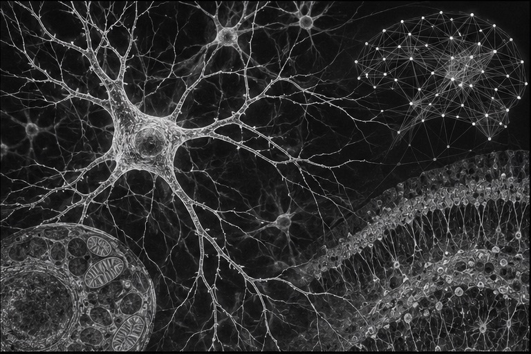
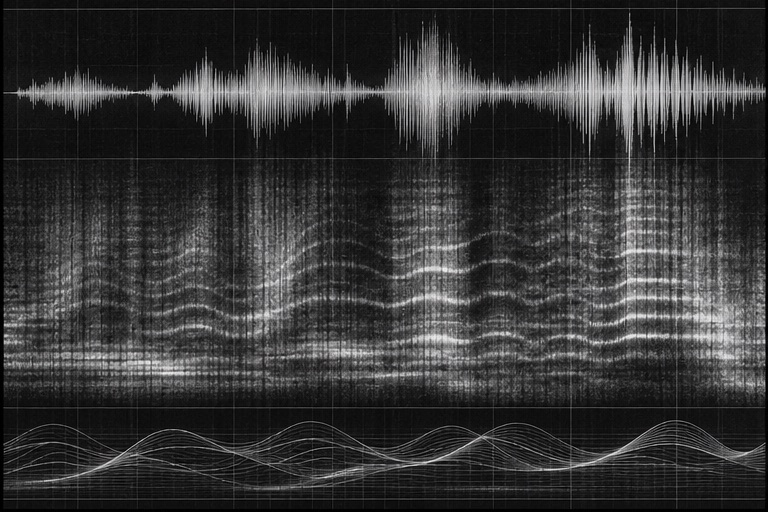
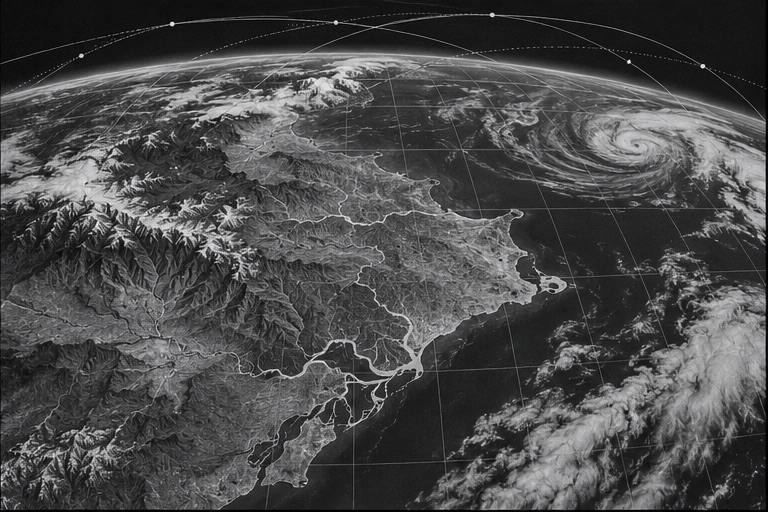

Voltaire
Researching intelligence, markets and complex systems.
An independent research studio developing computational models, experimental software and new ways of understanding complex systems.
Voltaire Research / Est. 2026
Research initiatives
01 — 04
Nocturne
Computational market intelligence

Cortex
Artificial and biological intelligence

Overture
Machine intelligence for music

Orbital
Planetary intelligence systems
Research statement
Voltaire / 2026Voltaire is an independent research studio examining the computational principles underlying intelligence, markets, sound and the physical world. Our work encompasses mathematical modeling, machine learning, experimental software and the development of new computational systems.
Research initiatives are developed independently, with an emphasis on experimentation, reproducibility and the translation of theoretical ideas into working systems.
Research index
Open archiveResearch notes and experimental results will be published here.